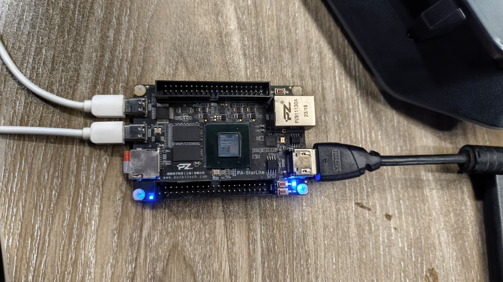
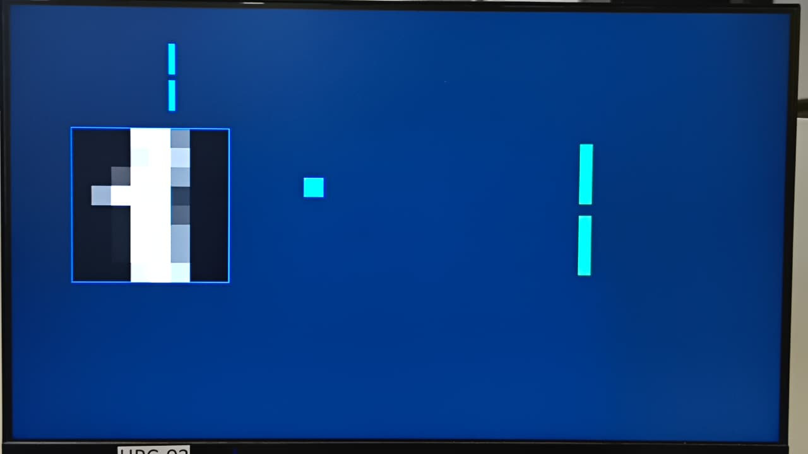
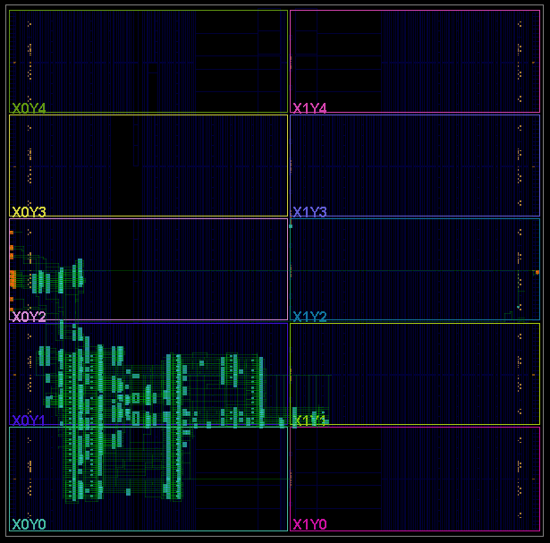
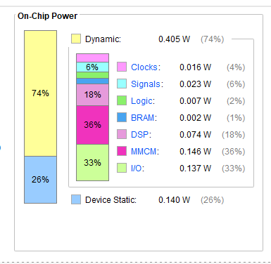
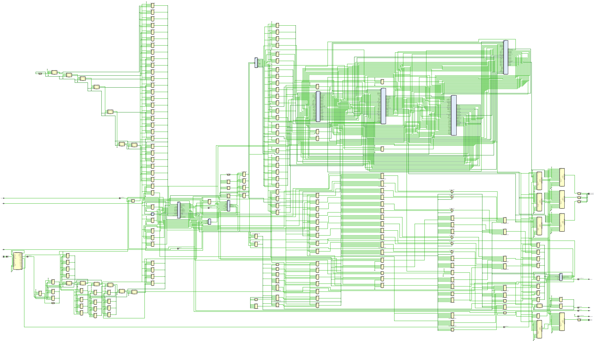

CNN Digit Detector
A complete end-to-end pipeline that trains a 2D Convolutional Neural Network in PyTorch, exports its weights as fixed-point C++ constants, synthesises the network logic into hardware via Vitis HLS, and deploys the resulting bitstream to an Artix-7 FPGA — with live digit recognition displayed over HDMI.
| Target Device | PA-StarLite · Artix-7 XC7A200T (215 K LUTs · 740 DSPs · 13 Mb BRAM) |
| Toolchain | Vitis HLS · AMD Vivado · PyTorch · Python (sklearn) |
| Dataset | scikit-learn Digits — 1,797 handwritten images (8×8 px, classes 0–9) |
| Interface | Push-buttons · UART debug · HDMI live display (TMDS · 200 MHz diff. clock) |
| Arithmetic | ap_fixed<16,6> — 16-bit · 6 integer bits · 10 fractional bits |
| Clock | 200 MHz differential (DIFF_SSTL135, 5.0 ns period) |
| Dynamic Power | 0.405 W total (DSP 0.074 W · MMCM 0.146 W · I/O 0.137 W) |
Live Demonstration
The video below shows the CNN running on hardware — push-buttons cycle through the stored digit dataset, the 8×8 pixel image is rendered on the HDMI monitor, and the predicted class is displayed in real time alongside the 10-class logit bar chart.
What you are seeing
The CNN bitstream is running directly on FPGA hardware. Physical push-buttons cycle through 1,797 stored digit images. For each button press:
- The selected 8×8 pixel image is fetched from on-chip BRAM and fed to the CNN accelerator.
- The hardware completes a full forward pass — Conv → ReLU → MaxPool → FC — in a single clock burst at 200 MHz.
- The HDMI output renders the pixel grid (left panel) and a 10-class logit bar chart side-by-side on the monitor.
- The tallest bar identifies the predicted digit class in real time — no CPU involved after the AXI handshake.
Video is muted and loops automatically. Use the controls to pause or scrub.

CNN Hardware Architecture
The forward pass is a three-layer network: a 3×3 convolution with ReLU activation, a 2×2 max-pooling, and a fully-connected linear classifier for 10 digit classes. All intermediate buffers are dual-port BRAMs partitioned across channel dimensions for II=1 pipelining. In HLS, each block becomes physical hardware — multipliers, adders, comparators, and Block RAMs — all operating concurrently.
CNN hardware dataflow — three pipelined stages. BRAM buffers (cylinders) hold intermediate feature maps; all loops run at II=1 with full channel unrolling.
HLS Design
The CNN function is described in C++ with HLS pragmas. Key optimisations: full channel-loop unrolling (4 parallel convolution engines) and complete array partitioning on the BRAM buffers so all four channels can be read or written in a single cycle.
HLS compilation flow — PyTorch trains the model and exports fixed-point weights; Vitis HLS synthesises the C++ forward pass to RTL; Vivado places, routes, and generates the bitstream.
// Channel loop unrolled → 4 parallel hardware convolution engines
conv_label_oc: for (int oc = 0; oc < 4; oc++) {
#pragma HLS UNROLL
for (int r = 0; r < 8; r++) {
for (int c = 0; c < 8; c++) {
#pragma HLS PIPELINE II=1
// 3×3 kernel accumulation with zero-padding
}
}
}
data_t conv_out[4][8][8];
#pragma HLS ARRAY_PARTITION variable=conv_out complete dim=1 // all 4ch in parallelRTL Architecture
The HLS synthesis generates a Verilog hierarchy under cnn.v — orchestrated by a 20-state Control FSM that schedules overlapping convolution and pooling to maximise utilisation: one filter pair convolved while the previous is being pooled.
RTL hierarchy generated by Vitis HLS. The FSM (inset) overlaps convolution and pooling in States 2–10, pre-loads FC registers in States 11–19, then runs 10 dot products in parallel at State 20.
Hardware & Results




cnn.v top-level wrapper showing ROM, BRAM, DSP MAC block connections, and HDMI output stage.Implementation Summary
| Metric | Value |
|---|---|
| Clock Frequency | 200 MHz — timing closure achieved, no negative slack |
| Pipeline II | 1 (both convolution and pooling spatial loops) |
| FSM States | 20 — overlapping CONV/POOL + parallel register pre-load |
| Dynamic Power | 0.405 W (MMCM 0.146 W · I/O 0.137 W · DSP 0.074 W) |
| Arithmetic | ap_fixed<16,6> — bit-accurate co-simulation matches PyTorch FP32 outputs |
| Weight storage | 64 fc_w ROMs + 1 fc_b ROM + conv_w/conv_b constants in LUT fabric |